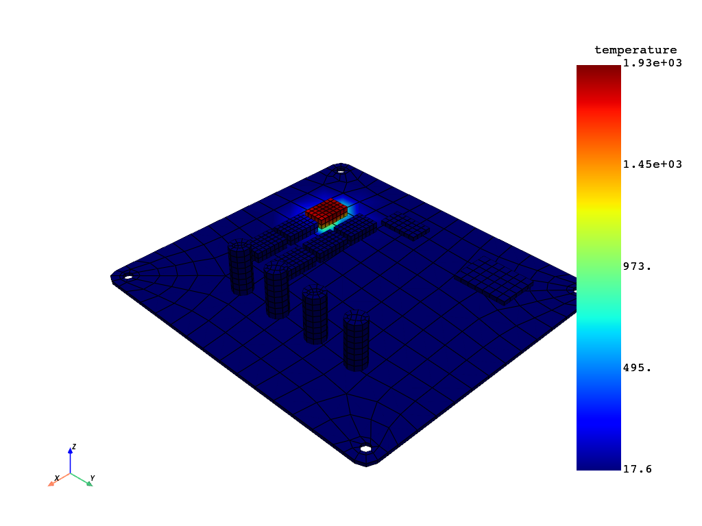

Note
Go to the end to download the full example code.
Post-processing#
This examples shows how dataprocessing framework can be used to extract results and analyze them.
import os
from pathlib import Path
from ansys.dpf import core as dpf
Parameters for the script#
The following parameters are used to control the script execution. You can modify these parameters to suit your needs.
GRAPHICS_BOOL = False # Set to True to display the graphics
OUTPUT_DIR = Path(Path(__file__).parent, "outputs") # Output directory
Finding necessary files for dpf#
def find_files(directory, extension):
rst_files = []
for root, _, files in os.walk(directory):
for file in files:
if file.endswith(extension):
rst_files.append(os.path.join(root, file))
return rst_files
extension_to_find = ".rth"
# Mechanical poject directory
project_directory = os.path.join(OUTPUT_DIR, "pcb_Mech_Files")
steady_state_rth_file = find_files(
os.path.join(project_directory, "SteadyStateThermal"), extension_to_find
)
transient_rth_file = find_files(
os.path.join(project_directory, "TransientThermal"), extension_to_find
)
if steady_state_rth_file and transient_rth_file:
print(f"Found {extension_to_find} files.")
else:
print("No .rst files found.")
print(steady_state_rth_file)
print(transient_rth_file)
Found .rth files.
['/__w/pyansys-workflows/pyansys-workflows/geometry-mechanical-dpf/outputs/pcb_Mech_Files/SteadyStateThermal/file.rth']
['/__w/pyansys-workflows/pyansys-workflows/geometry-mechanical-dpf/outputs/pcb_Mech_Files/TransientThermal/file.rth']
DPF workflow#
# Result precision
decimal_precision = 6
Steady state thermal results#
Create model
steady_state_model = dpf.Model(steady_state_rth_file[0])
print(steady_state_model)
# Get temperature distribution
temp = steady_state_model.results.temperature.on_last_time_freq.eval()[0]
# Plot the temperature for ic-6
if GRAPHICS_BOOL:
temp.plot()
DPF Model
------------------------------
Static analysis
Unit system: MKS: m, kg, N, s, V, A, degC
Physics Type: Thermal
Available results:
- temperature: Nodal Temperature
- elemental_summable_miscellaneous_data: Elemental Elemental Summable Miscellaneous Data
- elemental_volume: Elemental Volume
- stiffness_matrix_energy: Elemental Energy-stiffness matrix
- artificial_hourglass_energy: Elemental Hourglass Energy
- thermal_dissipation_energy: Elemental thermal dissipation energy
- kinetic_energy: Elemental Kinetic Energy
- co_energy: Elemental co-energy
- incremental_energy: Elemental incremental energy
- element_euler_angles: ElementalNodal Element Euler Angles
- elemental_non_summable_miscellaneous_data: Elemental Elemental Non Summable Miscellaneous Data
- contact_status: ElementalNodal Contact Status
- contact_penetration: ElementalNodal Contact Penetration
- contact_pressure: ElementalNodal Contact Pressure
- contact_friction_stress: ElementalNodal Contact Friction Stress
- contact_total_stress: ElementalNodal Contact Total Stress
- contact_sliding_distance: ElementalNodal Contact Sliding Distance
- contact_gap_distance: ElementalNodal Contact Gap Distance
- total_heat_flux_at_contact_surface: ElementalNodal Total heat flux at contact surface
- contact_status_changes: ElementalNodal Contact status changes
- fluid_penetration_pressure: ElementalNodal Fluid Penetration Pressure
- heat_flux: ElementalNodal Heat flux
------------------------------
DPF Meshed Region:
8274 nodes
2051 elements
Unit: m
With solid (3D) elements, shell (2D) elements, shell (3D) elements
------------------------------
DPF Time/Freq Support:
Number of sets: 1
Cumulative Time (s) LoadStep Substep
1 1.000000 1 1
Transient thermal results#
Create model
model = dpf.Model(transient_rth_file[0])
print(steady_state_model)
# Get temperature distribution
temp = model.results.temperature.on_last_time_freq.eval()[0]
# Plot the the temperature for ic-1
if GRAPHICS_BOOL:
temp.plot()

DPF Model
------------------------------
Static analysis
Unit system: MKS: m, kg, N, s, V, A, degC
Physics Type: Thermal
Available results:
- temperature: Nodal Temperature
- elemental_summable_miscellaneous_data: Elemental Elemental Summable Miscellaneous Data
- elemental_volume: Elemental Volume
- stiffness_matrix_energy: Elemental Energy-stiffness matrix
- artificial_hourglass_energy: Elemental Hourglass Energy
- thermal_dissipation_energy: Elemental thermal dissipation energy
- kinetic_energy: Elemental Kinetic Energy
- co_energy: Elemental co-energy
- incremental_energy: Elemental incremental energy
- element_euler_angles: ElementalNodal Element Euler Angles
- elemental_non_summable_miscellaneous_data: Elemental Elemental Non Summable Miscellaneous Data
- contact_status: ElementalNodal Contact Status
- contact_penetration: ElementalNodal Contact Penetration
- contact_pressure: ElementalNodal Contact Pressure
- contact_friction_stress: ElementalNodal Contact Friction Stress
- contact_total_stress: ElementalNodal Contact Total Stress
- contact_sliding_distance: ElementalNodal Contact Sliding Distance
- contact_gap_distance: ElementalNodal Contact Gap Distance
- total_heat_flux_at_contact_surface: ElementalNodal Total heat flux at contact surface
- contact_status_changes: ElementalNodal Contact status changes
- fluid_penetration_pressure: ElementalNodal Fluid Penetration Pressure
- heat_flux: ElementalNodal Heat flux
------------------------------
DPF Meshed Region:
8274 nodes
2051 elements
Unit: m
With solid (3D) elements, shell (2D) elements, shell (3D) elements
------------------------------
DPF Time/Freq Support:
Number of sets: 1
Cumulative Time (s) LoadStep Substep
1 1.000000 1 1
Total running time of the script: (0 minutes 6.134 seconds)